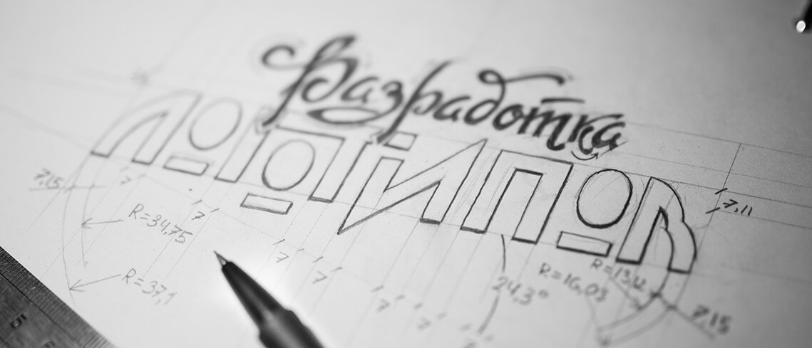

<?php
/*
Template Name: Услуга
*/

get_header();

$get_theme_file_uri = get_theme_file_uri();
?>    
<?php wp_enqueue_script( 'slick' ); ?>
<?php wp_enqueue_script( 'lightgallery' ); ?>
<?php wp_enqueue_style( 'slick' ); ?>
<?php wp_enqueue_style( 'lightgallery' ); ?>
<?php while ( have_posts() ) : the_post(); ?>
      <article class="main main--article">
        <div class="container">
          <section class="main__wrapper">
            <div class="main__content"><a class="main__back" href="">Назад</a>
              <div class="main__breadcrumbs">
                <div class="breadcrumbs"><span class="breadcrumbs__item"><a href="">Главная </a></span> / <span class="breadcrumbs__item"><a href="">Услуги </a></span> / <span class="breadcrumbs__item"><span>Дизайн брошюры</span></span></div>
              </div>
              <h1 class="main__title">Как правильно экономить на  полиграфии</h1>
              <div class="main__meta">
                <p class="main__info"><span>Опубликовано: 11.10.2017</span> <span>Просмотрено: 1429</span></p>
                <div class="main__tags tags"><a class="tags__item" href="">Реклама</a><a class="tags__item" href="">Лвйфхак</a></div>
              </div>
              <div class="content">
                <p>С точки зрения маркетинга, идеальная брошюра привлекает, вызывает интерес, побуждает узнать о предложении больше. За реализацию этих пунктов отвечает ее дизайн. Он является отправной точкой и определяет успех всего издания. Если оформление будет посредственным, то его не спасет даже гениальный контент, ведь читатель попросту не доберется до текстовой информации.</p>
                <section class="miniGallery"><a href="img/1.jpg"></a><a href="img/10.jpg"></a><a href="img/portf-2.jpg"></a><a href="img/11.jpg"></a><a href="img/portf-3.jpg"></a></section>
                <p>Для создания эффективного дизайна брошюр необходим и творческий, и аналитический подход. При этом весь процесс делится на несколько ключевых этапов.</p>
                <table class="priceList">
                  <thead>
                    <tr>
                      <th>Наименование услуги</th>
                      <th>Стоимость</th>
                    </tr>
                  </thead>
                  <tbody>
                    <tr>
                      <td>Дизайн брошюр</td>
                      <td>от <strong>1000 &#8381;</strong></td>
                    </tr>
                    <tr>
                      <td>Подарочный набор «Bari»</td>
                      <td><strong>3 054 &#8381;</strong></td>
                    </tr>
                  </tbody>
                </table>
                <p>Получение основной информации от клиента: </p>
                <ul>
                  <li>целевая аудитория и ее предпочтения;</li>
                  <li>география и места распространения брошюр; </li>
                  <li>главные задачи, которые преследует заказчик дизайна (продвижение продукта, услуги, создание определенного имиджа компании и др.); </li>
                  <li>наличие и особенности аналогичной продукции у конкурентов; </li>
                  <li>тираж и бюджет полиграфии (примерная цена услуги определяется уже на этапе согласования); </li>
                  <li>фирменный стиль компании и дизайнерские предпочтения заказчика; </li>
                  <li>рекламный материал за более ранний период.</li>
                </ul>
                <p>На основе полученных данных разрабатывается несколько вариантов дизайна брошюр. К этой работе привлекаются художники, фотографы и редакторы.</p>
                <p>Они создают креативные иллюстрации, подбирают определенную стилистику, формат, шрифты. Разработка ведется с учетом сроков, предварительно согласованной цены и прочих актуальных моментов.</p>
                <p>Готовые проекты предлагаются клиенту, который при необходимости вносит правки. На этом создание дизайна брошюр завершено. В дальнейшем клиент заказывает верстку и печать продукции в типографии.</p>
                <h2>Особенности и основные правила дизайна брошюр</h2>
                <section class="miniGallery"><a href="img/1.jpg"></a><a href="img/portf-2.jpg"></a><a href="img/portf-3.jpg"></a></section>
                <p>Они создают креативные иллюстрации, подбирают определенную стилистику, формат, шрифты. Разработка ведется с учетом сроков, предварительно согласованной цены и прочих актуальных моментов.</p>
              </div>
              <section class="main__popular popularArtciles">
                <p class="popularArtciles__title">Популярные статьи по теме:</p>
                <div class="popularArtciles__list">
                  <article class="popularArtciles__item">
                    <div class="popularArtciles__meta">
                      <div class="popularArtciles__tags tags"><a class="tags__item" href="">Реклама</a><a class="tags__item" href="">Лвйфхак</a></div>
                      <p class="popularArtciles__info"><span>Опубликовано: 11.10.2017</span> <span>Просмотрено: 1429</span></p>
                    </div><a class="popularArtciles__tail" href="">
                      <p class="popularArtciles__caption" href="">Как правильно экономить на полиграфии</p>
                      <p class="popularArtciles__excerpt">Не так важен подарок как внимание Важно ли дарить качественные сувениры? Катастрофически важно. Чрезвычайно. Почему? Да потому что ничто так явно не выражает...</p></a>
                  </article>
                  <article class="popularArtciles__item">
                    <div class="popularArtciles__meta">
                      <div class="popularArtciles__tags tags"><a class="tags__item" href="">Реклама</a><a class="tags__item" href="">Лвйфхак</a></div>
                      <p class="popularArtciles__info"><span>Опубликовано: 11.10.2017</span> <span>Просмотрено: 1429</span></p>
                    </div><a class="popularArtciles__tail" href="">
                      <p class="popularArtciles__caption" href="">Как правильно экономить на полиграфии</p>
                      <p class="popularArtciles__excerpt">Не так важен подарок как внимание Важно ли дарить качественные сувениры? Катастрофически важно. Чрезвычайно. Почему? Да потому что ничто так явно не выражает...</p></a>
                  </article>
                  <article class="popularArtciles__item">
                    <div class="popularArtciles__meta">
                      <div class="popularArtciles__tags tags"><a class="tags__item" href="">Реклама</a><a class="tags__item" href="">Лвйфхак</a></div>
                      <p class="popularArtciles__info"><span>Опубликовано: 11.10.2017</span> <span>Просмотрено: 1429</span></p>
                    </div><a class="popularArtciles__tail" href="">
                      <p class="popularArtciles__caption" href="">Как правильно экономить на полиграфии</p>
                      <p class="popularArtciles__excerpt">Не так важен подарок как внимание Важно ли дарить качественные сувениры? Катастрофически важно. Чрезвычайно. Почему? Да потому что ничто так явно не выражает...</p></a>
                  </article>
                </div>
              </section>
            </div>
            <aside class="main__sidebar">
              <p class="main__sideTitle">Наши статьи</p>
              <section class="main__sideArtciles sideArtciles">
                <article class="sideArtciles__item"><a class="sideArtciles__theme" href=""><strong>Как правильно экономить на полиграфии</strong> Что такое полиграфия? Полиграфия - это отрасль промышленности, занимающаяся изготовлением печатной</a>
                  <div class="sideArtciles__tags tags"><a class="tags__item" href="">Реклама</a><a class="tags__item" href="">Лвйфхак</a><a class="tags__item" href="">dvbsd</a></div>
                </article>
                <article class="sideArtciles__item"><a class="sideArtciles__theme" href=""><strong>Стоит ли заказывать буклеты на выставки</strong> Что такое полиграфия? Полиграфия - это отрасль промышленности, занимающаяся изготовлением печатной</a>
                  <div class="sideArtciles__tags tags"><a class="tags__item" href="">Реклама</a><a class="tags__item" href="">Лвйфхак</a></div>
                </article>
                <article class="sideArtciles__item"><a class="sideArtciles__theme" href=""><strong>RGB, CMYK, пантоны…Что нужно знать при размещении заказа? Часть 2</strong> Что такое полиграфия? Полиграфия - это отрасль промышленности, занимающаяся изготовлением печатной</a>
                  <div class="sideArtciles__tags tags"><a class="tags__item" href="">Лвйфхак</a></div>
                </article>
                <article class="sideArtciles__item"><a class="sideArtciles__theme" href=""><strong>6 шагов для успешного делегирования</strong> Что такое полиграфия? Полиграфия - это отрасль промышленности, занимающаяся изготовлением печатной</a>
                  <div class="sideArtciles__tags tags"><a class="tags__item" href="">Реклама</a><a class="tags__item" href="">Лвйфхак</a></div>
                </article>
              </section>
              <div class="slideShow"><a href="" style="background-image: url(img/show1.jpg)"></a><a href="" style="background-image: url(img/show1.jpg)"></a></div>
            </aside>
          </section>
        </div>
      </article>
     <?php endwhile; ?>
<?php get_footer(); ?>
